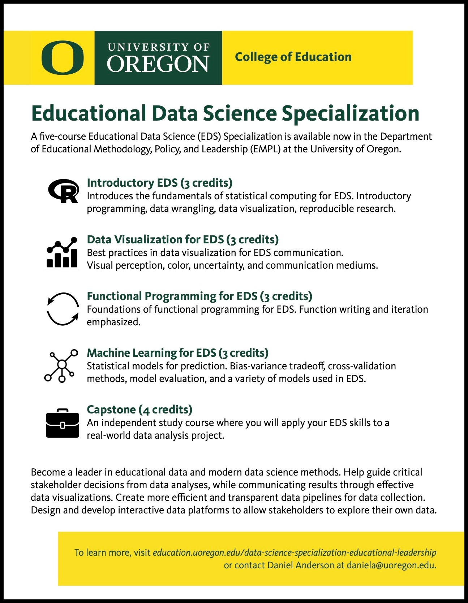

Below is a curated list of resources we’ve found to be particularly useful and accessible. If you come across other great resources that you think you should be on this list, please let us know!
R for Data Science—thorough and accessible, includes exercises and community-contributed solutions
Modern Dive—great for complete beginners, more focused on stats and modelling
The Tidyverse Style Guide—for getting into the habit of using best practices early on
Big Book of R—a collection of pretty much any R-related book that’s out there (categorized by topic and searchable)
RStudio Education’s learning resources and blog—a veritable treasure trove!
RStudio cheatsheets—worth printing ones you commonly use
tidyverse.org—links to learning resources, package documentation, and a great blog to stay up to date
learnr4free—a searchable site for all sorts of learning resources
RBootcamp—a free online course about the basics of the tidyverse
RStudio primers—these, along with other tutorials, can also be run in the Tutorial pane in the RStudio IDE
Teacup Giraffes—more stats focused, with incredible artwork and adorable tiny giraffes 🦒
R for Data Science Online Learning Community—super friendly and welcoming to R users at all levels
#rstats Twitter—also very friendly and inclusive (despite being Twitter). Good advice on this here
Tidy Tuesday—a weekly community-based data viz challenge on Twitter. Great for hands-on, self-directed practice!
RStudio Community—great for asking for help from knowledgable experts
5-course Educational Data Science Specialization offered by UO College of Education. See course websites here and info sheet below. Cannot recommend highly enough! ⭐ ⭐ ⭐ ⭐ ⭐
UO Psych Data Analysis Sequence (PSY611, PSY612, PSY613), led by Sara Weston and Elliot Berkman. See course websites here—you will learn a TON.
Free R workshops offered by Data Services, a branch of UO Libraries. Includes a “Master the Tidyverse” series.
SlackRs workspace—use this to ask for help from other UO community members when you’re stuck on something or need some advice.
Each other! As grad students, one of the best resources you have access to is your peers. You can read more of Brendan Cullen’s thoughts about this here. When in doubt, ask for help—and pay it forward if/whenever you can. ❤️

{kind=link}